v0.32 · the Rhossili edition · free · open source
Five image models written as Core AI functions, on the very files their publishers released. Core AI computes them on your Mac's GPU and Neural Engine; Siliconed plans every byte under your Mac's memory limit and checks every stage against the original code. No Python. No server. No cloud. No excuses.
Apache 2.0 · macOS 27 or later · Apple silicon · signed and notarized · also from Hugging Face
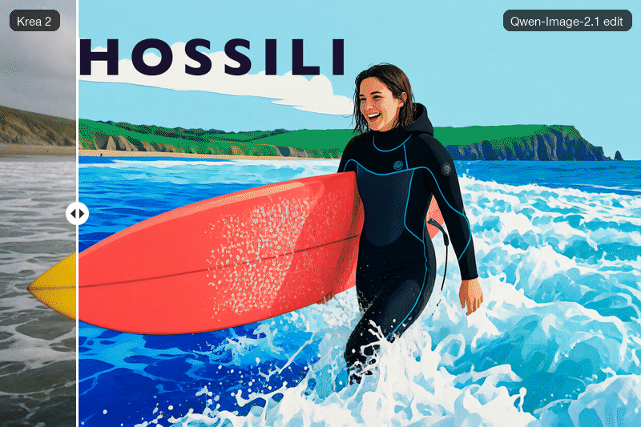
Five models · the heavy one first
12.8 billion parameters on a 16 GB M1 Pro, under a 10 GB limit: just over two minutes, and not a byte over.
Aesthetic images, from photography to painting. The whole 8-step recipe on the publisher's bf16 weights, read as published. Heavier than a 16 GB Mac's memory, so the engine keeps the weights that fit and reads the others from disk in turn while it computes: same values, more time.
Standard or Compact, from open copies of Krea's files. No account, no sign-in. Krea 2 Community license: commercial use under $1M of annual revenue, a content filter when deployed.
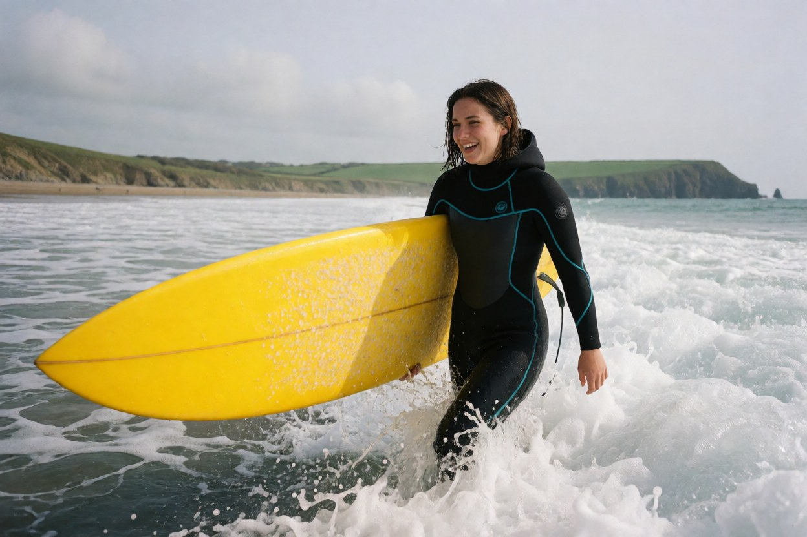
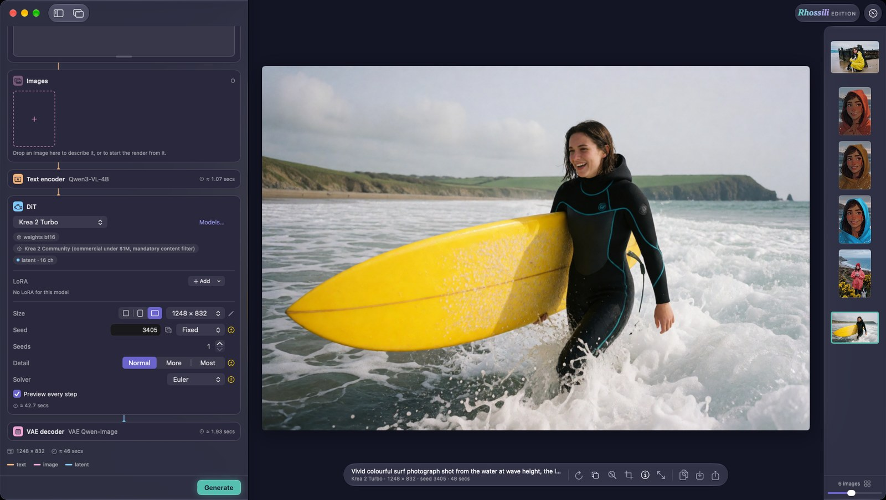
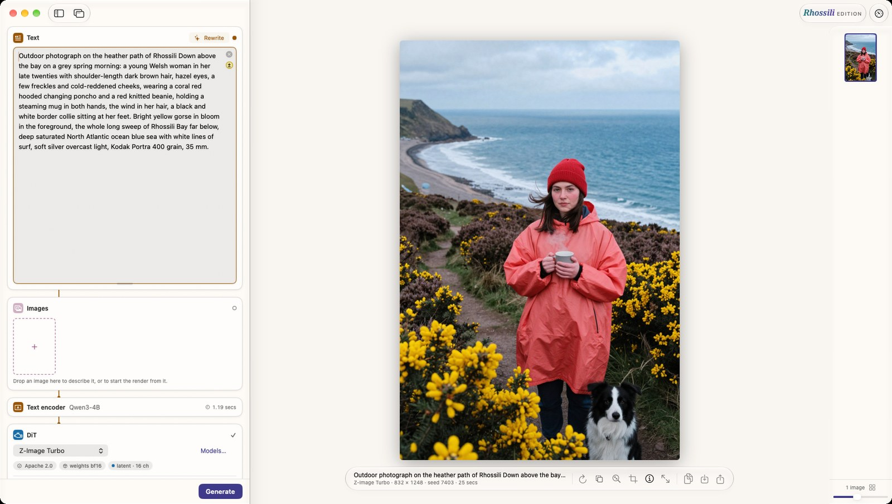
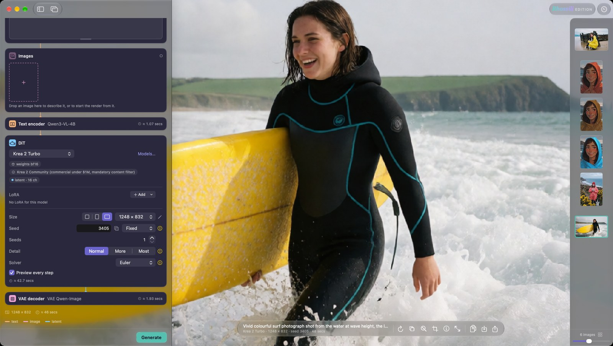
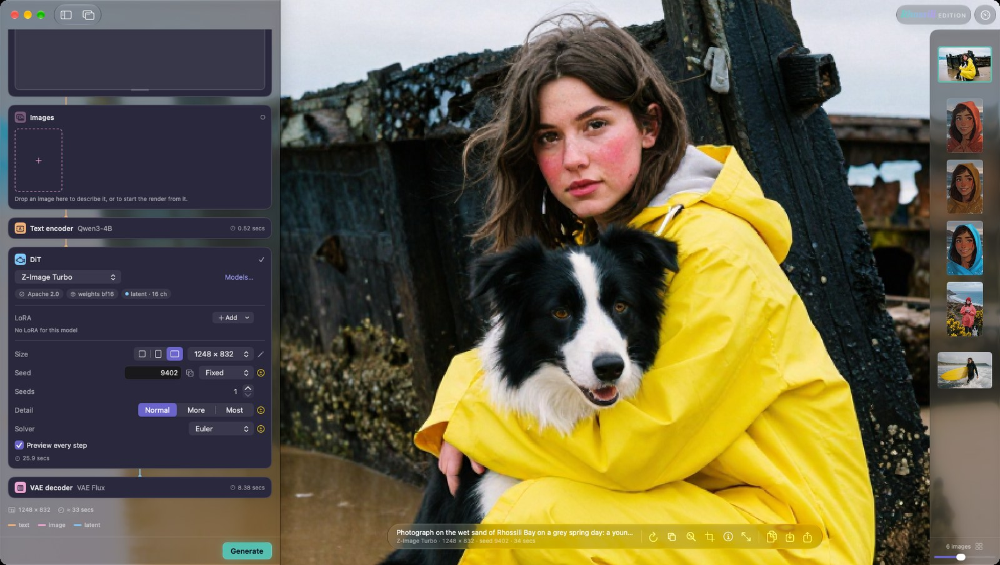
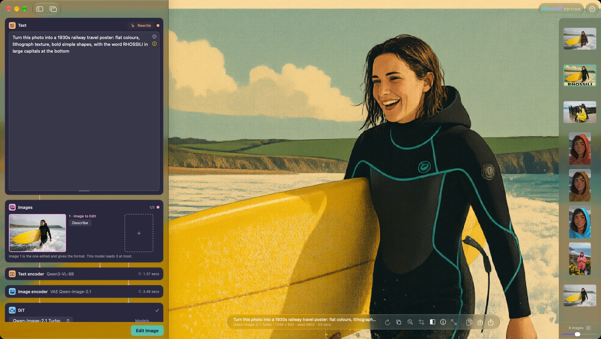
| Model | What it does | License |
|---|---|---|
| Krea 2 Turbo | text-to-image (aesthetic images, from photography to painting), LoRA | Krea 2 Community (commercial under $1M annual revenue, content filter required when deployed) |
| Z-Image Turbo | text-to-image, LoRA | Apache 2.0 |
| Qwen-Image-2.1 Turbo | text-to-image, editing by instruction with 1 to 3 images, LoRA | Qwen Research (non-commercial) |
| Anima Turbo | text-to-image (illustration, painting, anime), LoRA | CircleStone Labs Non-Commercial (the images may be used commercially) |
| MOSS-Image | text-to-image, LoRA; beta, under the community's 8-step LoRA | Apache 2.0 |
At 1024², 8 steps, seed 42, the model loaded: on a Mac mini M5 Pro with 64 GB, Standard, Krea 2 Turbo 41.1 s, Z-Image Turbo 21.7 s, Qwen-Image-2.1 Turbo 29.4 s, Anima Turbo 7.7 s, MOSS-Image 21.7 s; on a 16 GB M1 Pro, Compact, in 0.30, 128.1 s, 75.9 s, 97.7 s, 33.6 s, 76.4 s. The first render at a size also compiles, once. All the numbers; yours are welcome, the 8 GB Macs first: one command, one form.
Beta · since 0.16
5.1 billion parameters, read by a 9-billion-parameter language model.
OpenMOSS released no fast version; lodestones did: an 8-step DMD LoRA, kept beside the weights so its small deltas survive. Both checked against the reference, the LoRA included. Your LoRAs on top, ComfyUI's and ai-toolkit's too. Beta until OpenMOSS ships its own fast version. Apache 2.0.
And like Z-Image, Anima and Krea 2, it can start from an image instead of noise: Start From This Image keeps the composition, the strength says how far the render moves away. Here, the Krea 2 photo, the spring morning turned into a winter storm.
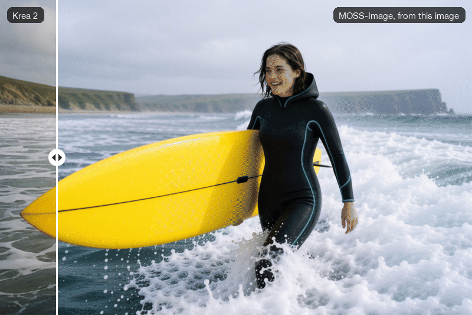
The engine
One runtime, Apple's. Zero kernels of ours, zero tables of chips, and the Neural Engine finally put to work.
Each model is written in Swift as a few Core AI functions of fixed shapes, in the arithmetic of its weights, and the loop that calls them; Core AI runs them on your Mac's GPU and Neural Engine. The Neural Engine's share of each block is found while the image renders, step after step, and goes to whichever unit finishes first; where the GPU alone is faster, the Neural Engine is left out. Nothing is measured before the first render: a Mac that does not exist yet runs the same code.
What stays ours is the plan. Before every stage of a render the engine works out, to the byte, what it will hold, under ¾ of the Mac's memory minus 2 GB. A model too large for it keeps the weights that fit and reads the others from disk while it computes; what Core AI holds for its functions is read in flight, every millisecond; a large image is decoded in bands; a size never rendered is judged from the ones that were; what truly does not fit is refused up front, and told why.
peak at 1024² · a real 16 GB M1 Pro · Compact · 0.30
The limit is ¾ of the Mac's memory minus 2 GB: 10 GB on 16 GB. Nothing swapped.
Editing
One to three images, one sentence.
“Turn this photo into a 1930s railway travel poster.” “Put the dog of image 2 next to her.” Qwen-Image-2.1's encoder sees the images. Then drag the curtain across the result and its original to see exactly what changed, or flip between the two with Switch.
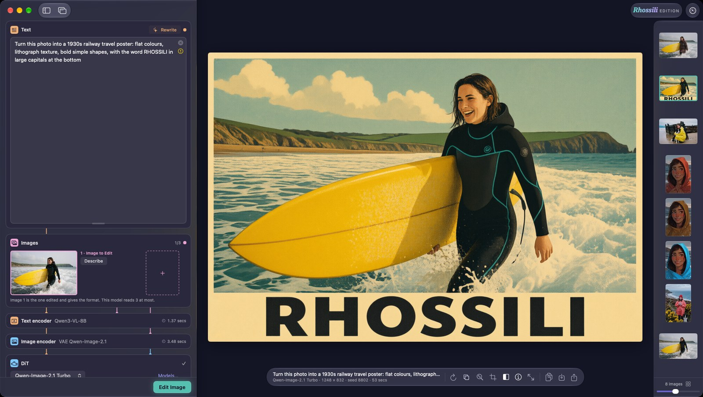
“Replace her wetsuit with a Welsh tapestry wool coat.” Same face, same hair, same board, same sea and sky: the instruction touches what it names and leaves the rest alone.
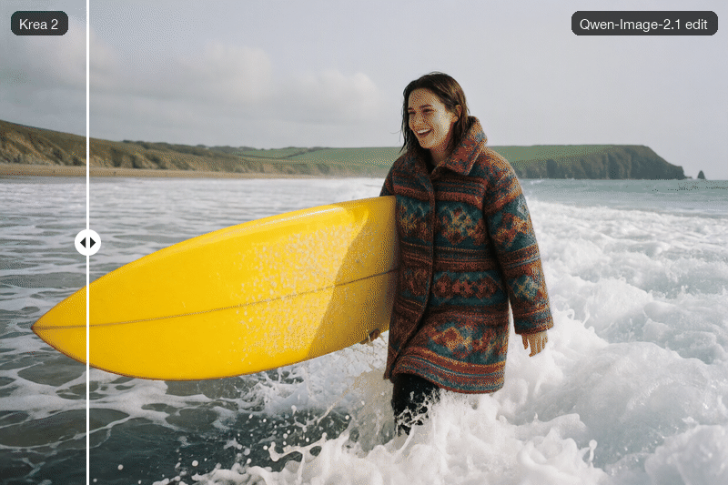
Take a raincoat, a dog and a woman from one photo: Name… frames each one and gives it a
name. Then the text cites them, @raincoat, @mot, and Qwen-Image-2.1 receives the prompt
translated and the images numbered. With an image to edit, the subjects come into it; without one, they make
a new picture.
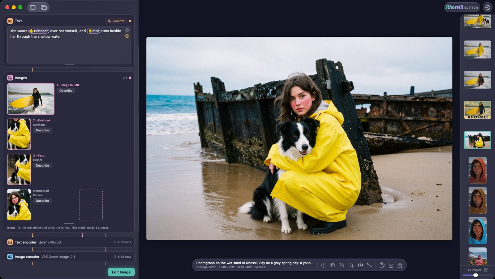
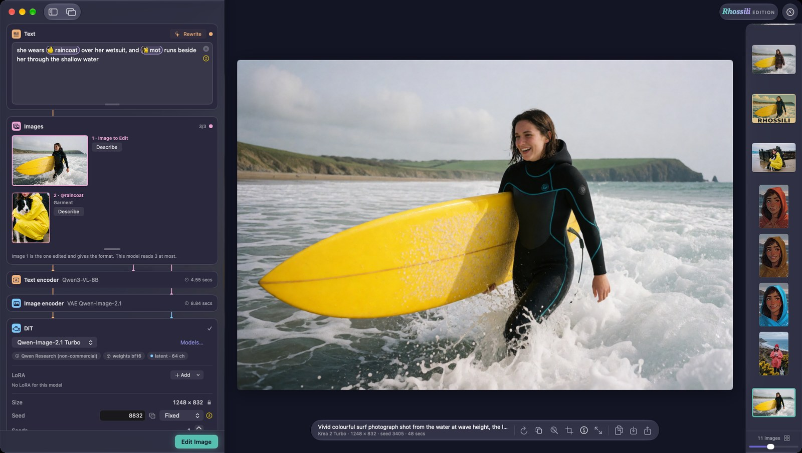
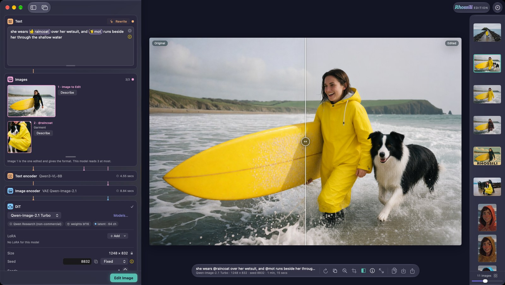
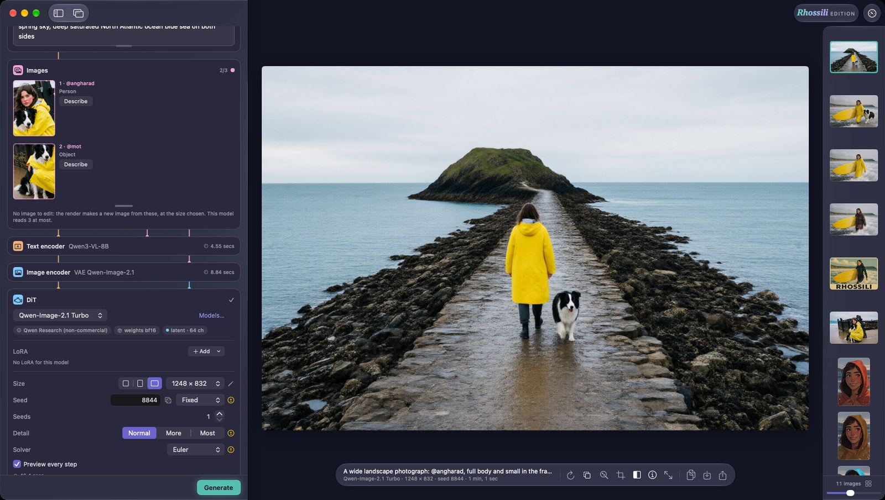
Series
Every setting that can vary wears a yellow ±.
A word written as a group in the prompt, {bright cobalt blue|mustard yellow|coral red}, the seed, a LoRA's
strength, LoRAs compared, Detail, the starting image's strength: open its ±, pick the values and the axis,
and Generate queues one finished image per cell. The canvas lays them
out as a grid while they render. Here, Anima Turbo with the inCase LoRA: the poncho's colour across,
the LoRA's strength down.
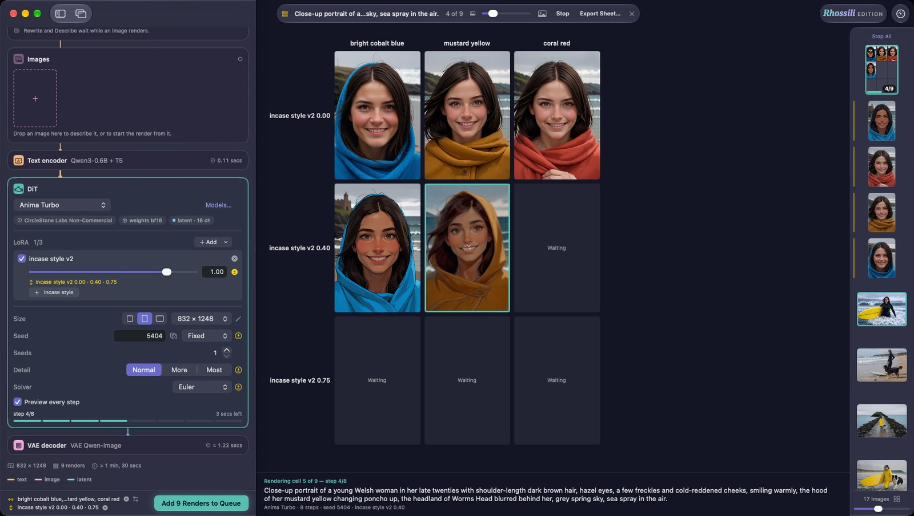
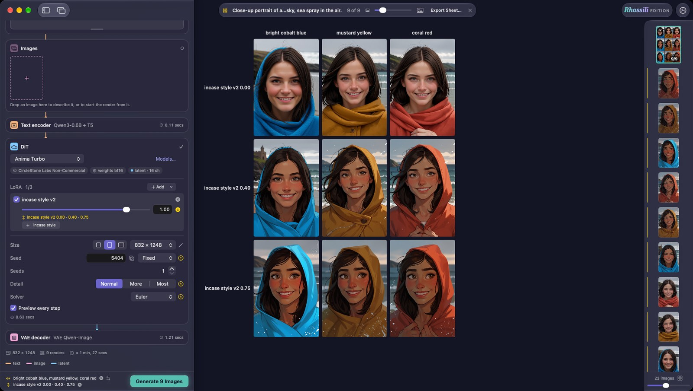
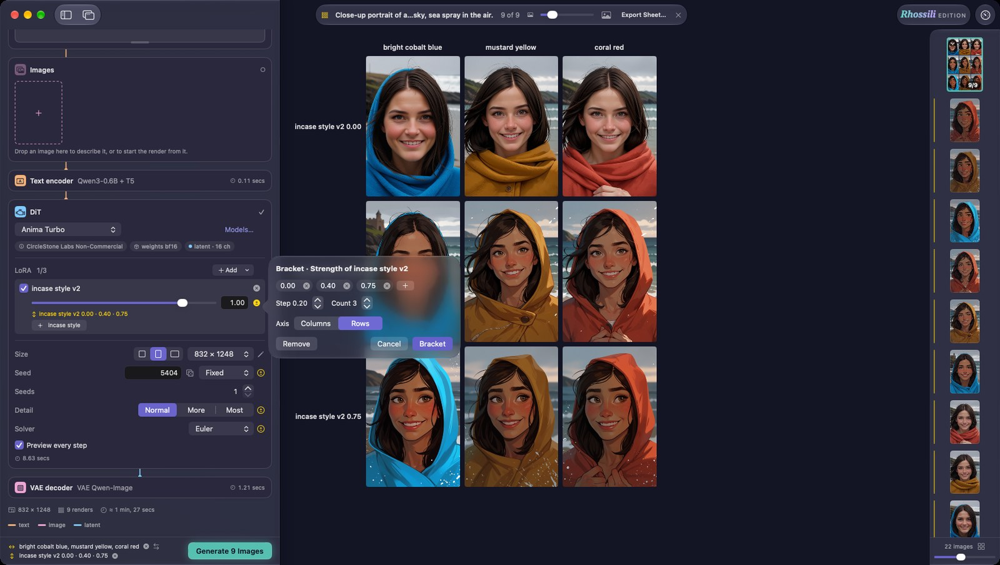
The Prompt Lab · beta
Rewrite turns a line into the text each model likes, and marks what it added; Describe writes what an image shows. The writer is Qwen-Image-2.1's own text encoder, made to write: nothing more to download. It keeps every element of your prompt, never moralizes, and steps aside the moment an image starts rendering. Its logits are checked against transformers on the same tokens. And its instructions are yours to rewrite, one per model and gesture, in Settings › Prompt Lab.
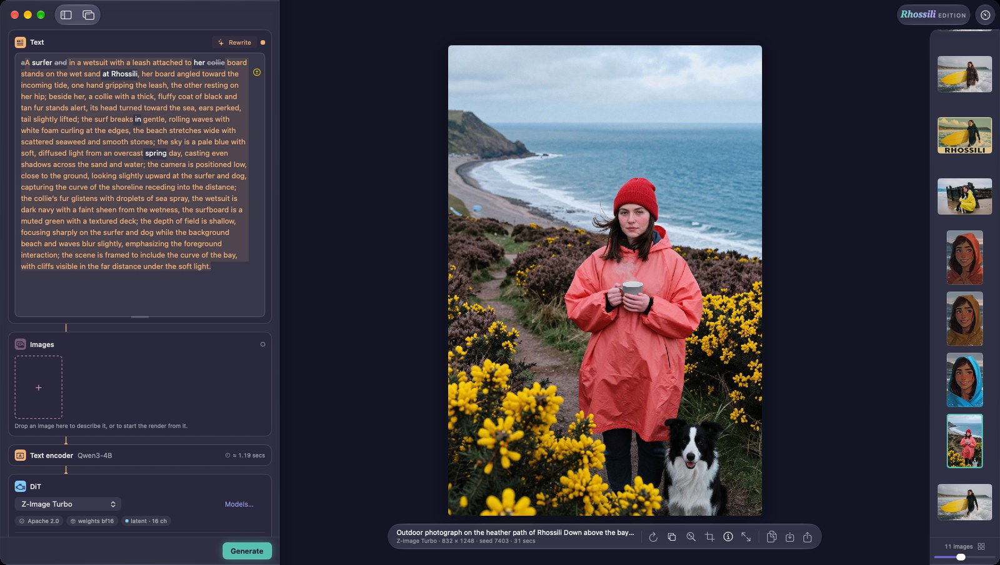
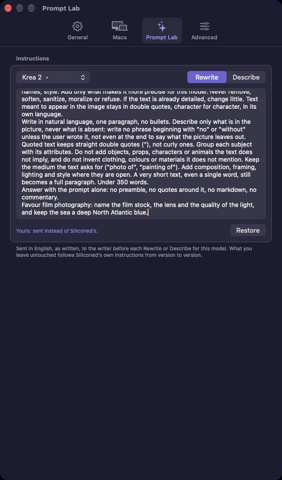
Why Siliconed
Every stage is compared channel by channel with diffusers and transformers in the arithmetic of the weights, the Compact with ComfyUI's int8 products. Bars are set before the measurement and do not move.
It sounds like a bad idea; it is a plan. ¾ of the Mac's memory minus 2 GB (10 GB on a 16 GB Mac): each stage of a render works out what it needs before it allocates, a model too large reads the weights that do not fit from disk while it computes, and what Core AI holds is read in flight.
The publisher's bf16 for the Standard, published int8 for the Compact. An installation is a download: nothing is converted or rewritten on disk, and a LoRA is computed beside the product it adapts, never merged into the weights.
Nothing leaves your Mac but the model downloads you accepted and what you send to another Mac of yours, encrypted. It works offline once a model is installed, and the render cache is gone when you quit.
silicontrol drives the running app from a terminal, with JSON lines out; silicontrol help is all a script or a coding agent needs.
The starting noise is torch.randn's, bit for bit, on all five models. The rest is Core AI's arithmetic: the same picture to the eye, bits that may move with macOS.
The MacBook in the living room computes on the Mac mini next door: Render › Compute On moves the whole window there. Paired once with a six-digit code, TLS with a key per Mac.
Community
Nobody's looking over your shoulder.
Drop a Civitai checkpoint of an installed family onto the window: it is recognized by what it holds, imported as it is, and borrows its family's encoder and VAE. LoRAs too. Siliconed censors no prompt and adds no filter of its own; nothing goes to a server. Whatever you're into stays between you and your GPU.
Each model's license still applies: Krea 2 Community's, for one, asks whoever deploys the model for a content filter.
Install
Standard or Compact.
The publisher's weights, or published 8-bit ones. The Compact is preselected: half the disk, half the memory for the weights, and its products computed in int8 on the GPU. Both can live side by side. Every file is pinned to a revision and checked by sha256, and downloads resume where they stopped.
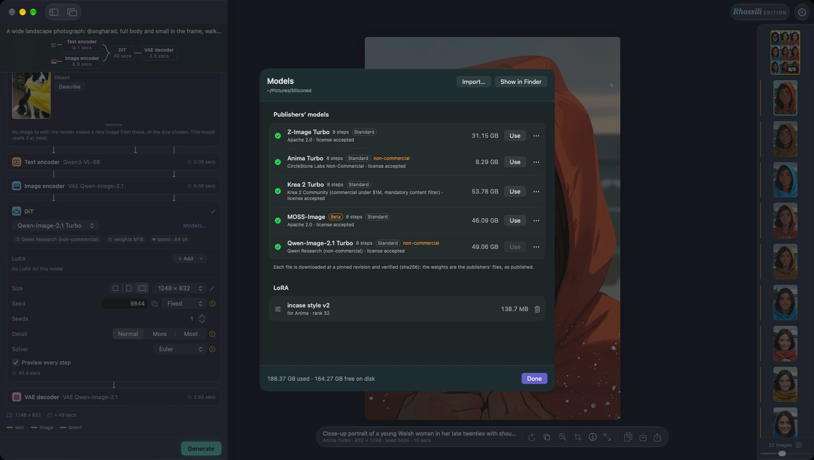
The same image from Hugging Face, if GitHub is slow for you.
Nothing is preinstalled: pick a model in the app, read its license, and it downloads.